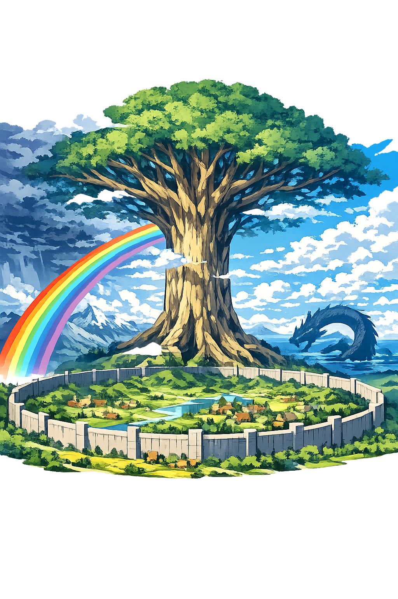

The Authentic Orthography
Middle Enclosure · The World of Mortals · Center of Yggdrasil

Why miðgarðr.com is the correct form
Miðgarðr
The name in its original Old Norse form — a compound of mið ("middle") and garðr ("enclosure, yard, fence"). In the Norse cosmos, Miðgarðr is the central realm, the world of humans, suspended among the branches and roots of Yggdrasil, protected by walls built by the gods themselves. The ð (eth) is not a stylistic flourish — it is a distinct phoneme, the voiced dental fricative, as real to Old Norse speakers as any letter in our alphabet is to us.
MIDGARDR
Reduced to seven plain letters. The two eth characters — each one a precise record of Old Norse pronunciation — are flattened into generic d. The result is "Midgard," a modern English simplification that erases the voiced th sound entirely. The name becomes a Marvel location, a video game level, a fantasy cliché. The enclosure is still there, but the walls have been torn down.
Miðgarðr
Both ð characters are restored — the eth in mið and the eth in garðr. This is philological accuracy, not decoration. The voiced dental fricative (IPA /ð/) was a living sound in Old Norse, distinct from the voiceless þ (thorn). Preserving both eths honors the full phonetic integrity of the name. The domain encodes to Punycode, but the browser displays the truth.
miðgarðr.com → xn--migarr-qwad.com
The non-ASCII characters ð (U+00F0, Latin Small Letter Eth) appear twice in Miðgarðr. To the DNS, the domain is Punycode. To the Eddas, it is Miðgarðr — the middle enclosure, the world at the center of everything.
How the world of mortals was truly spoken
The world of humans in Norse cosmology
Miðgarðr is not merely Earth. It is the protected middle — the realm of humans, encircled by the World Serpent Jörmungandr, suspended in the branches of Yggdrasil, and walled by the gods against the giants. It is the center of the Norse cosmos, the turning point between the divine heights of Ásgarðr and the chaotic depths of Jǫtunheimr and Helheimr. Here, humans live, farm, love, feud, and dream — unaware that the great tree shakes above them and the serpent tightens below.
Yggdrasil, the ash tree that holds all nine worlds in its branches and roots. Miðgarðr hangs at its center, sustained by the tree's life-force. The Norns water it from the Well of Urd. Without the tree, the world would fall.
Jörmungandr encircles Miðgarðr, biting his own tail, holding the realm together by pressure. When he releases his tail, the world will end. He is not evil — he is boundary itself, the limit that defines what is inside.
The gods built a great wall around Miðgarðr to defend against the giants. In the Prose Edda, a giant builder offered to construct it in one winter — with the help of his horse. The gods agreed, and Loki's trickery became legend.
The burning rainbow bridge connects Miðgarðr to Ásgarðr, the realm of the gods. Heimdallr guards it night and day. One day, when the giants march across it at Ragnarök, the bridge will shatter under their weight.
Stories that shaped the world at the center
In the beginning, there was only Ginnungagap, the yawning void. To the north was Niflheimr, realm of ice and mist. To the south was Múspell, realm of fire. Where they met, the giant Ymir was born from the melting ice. The gods Óðinn, Vili, and Vé slew Ymir and fashioned the world from his body. His flesh became the earth — Miðgarðr itself. His blood became the oceans and lakes. His bones became the mountains. His teeth became the rocks. His skull became the sky, held aloft by four dwarfs at the cardinal directions. His brains became the clouds. The world of humans is literally the flesh of a giant, shaped by divine hands into a habitable realm.
A unnamed giant builder appeared at Ásgarðr and offered to build an impregnable wall around the gods' citadel in a single winter — if they would give him the sun, the moon, and the goddess Freyja as payment. The gods, confident he could not finish in time, agreed, with the condition that he work alone. But the builder had a mighty stallion, Svaðilfari, who carried stones by night. As the winter drew to a close, the wall was nearly complete. Desperate, the gods forced Loki to intervene. Loki transformed into a mare and lured Svaðilfari away. The builder, enraged, revealed his giant nature, and Þórr slew him with his hammer. From Loki and the stallion was born Sleipnir, the eight-legged horse. And the wall stood — the divine enclosure that protects the gods, just as Miðgarðr's wall protects humanity.
Loki's children by the giantess Angrboða were three: the wolf Fenrir, the serpent Jörmungandr, and the goddess Hel. Óðinn, foreseeing the destruction they would bring, cast Jörmungandr into the great ocean that encircles Miðgarðr. There, the serpent grew until he was large enough to encircle the entire world and bite his own tail. He lies beneath the waves, his coils pressing against the shores of every land. Fishermen who catch unusual fish are sometimes said to have hooked the World Serpent. When he stirs, the seas rise. He is the boundary that keeps Miðgarðr together — and the force that will tear it apart.
At Ragnarök, the end of the world, Jörmungandr will release his tail and thrash in the ocean. The seas will rise and flood Miðgarðr, drowning the fields, the halls, and the homes of mortals. The sky will split. Fire giants will march from Múspell. The wolf Sköll will devour the sun, and Hati will devour the moon. Stars will fall from the heavens. Þórr will finally face Jörmungandr and slay him — but will take nine steps before the serpent's venom kills him. The earth will sink into the sea. And yet, from the waters, a new earth will emerge, green and fertile, where the surviving gods will gather and the world will begin again. Miðgarðr is destroyed — and reborn.
Forms of the name across time and orthography
The full Old Norse form with both eth characters preserved. This is the scholarly standard and the Unicode restoration.
The ASCII transliteration. Both voiced dental fricatives are flattened to d, losing the phonetic distinction.
The common English form, dropping the final nominative -r and both eth characters. Useful for general readers, but not for scholarly accuracy.
Note: English "Midgard" is a simplification; Miðgarðr preserves both eth characters. The eth (ð) represents a voiced "th" sound — as in "this" — that English spelling has abandoned. When you see Miðgarðr, you are seeing a sound that was once as natural to Norse speakers as any letter is to us today.
Miðgarðr is the center. The axis around which the Norse cosmos turns. Above it, Ásgarðr and Álfheimr. Below it, Helheimr and Niflheimr. Around it, Jǫtunheimr, Vanaheimr, Svartálfaheimr, and Múspell. Each world has its own domain, its own inhabitants, its own orthography. To understand Miðgarðr is to understand the tree that holds it, the serpent that encircles it, and the gods who built its walls.
This is not a directory. This is a resurrection.
Enter the CodexSee how Miðgarðr behaves in the PUNYCODEX Type Tool — with predictive autocomplete, character-by-character breakdown, and scholarly constraint validation.
midgardr
→
Miðgarðr